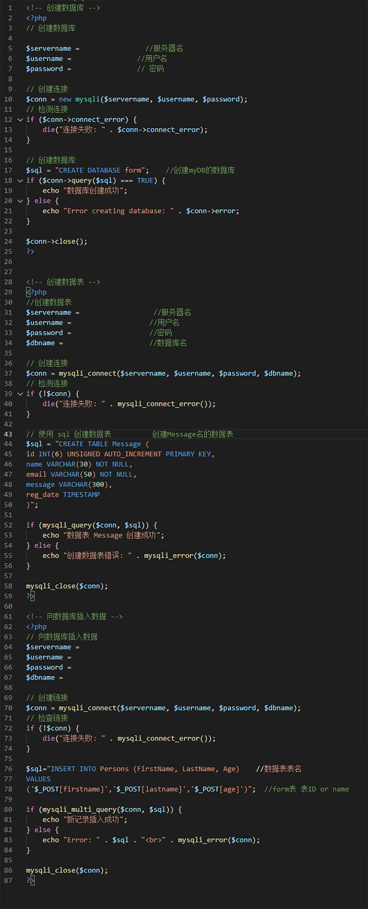
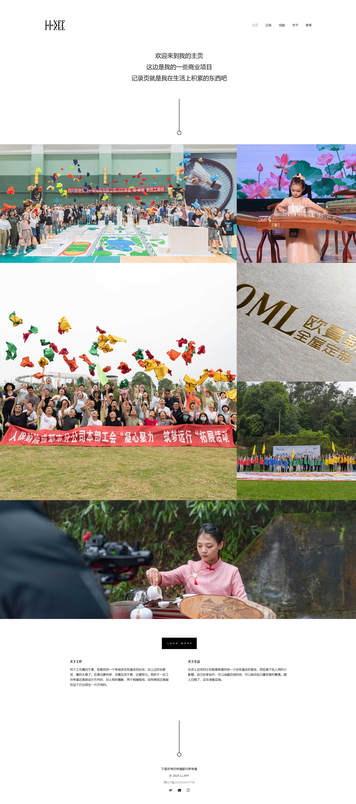
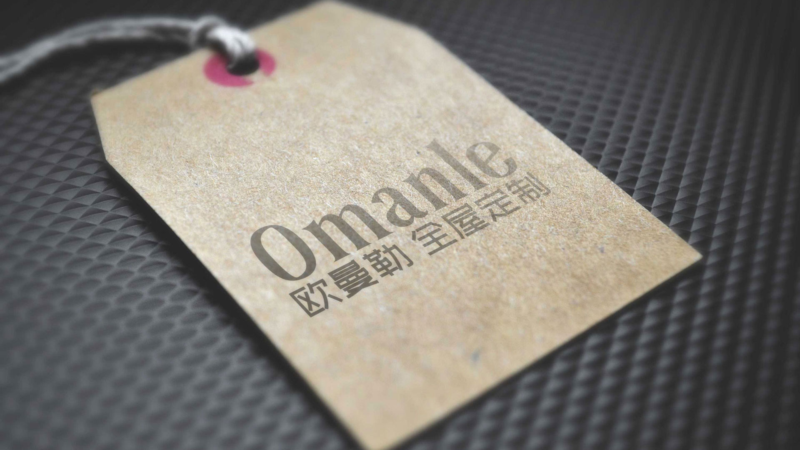

专业方向
兴趣爱好
时间节点
-
202006
任职于成都像我家科技有限公司 -
201903
任职于四川链家房地产经纪有限公司 -
201606
就读于四川长江职业学院
不是所有的幸福都叫罗幸福
谨慎和自制是智慧的源泉！

我不适合当职场上的螺丝钉，我比较适合职场上的“万金油”。
大学专业为软件技术，最后学偏了偏到新媒体和设计方向去了，最近的一年工作期间又学偏了，偏到桌面运维 网络运维上面去了。
精通PC各种硬件安装调试、熟悉各个操作系统、基本网络问题能快速定位及修复。
最后拿一段话来介绍我自己，爱好广泛、性格开朗、检索能力、接纳新事物能力和动手能力都极强。
-
年龄：24岁
-
微信：xiaoluo0504
作品集
-

LLXFF网站
2022版从大学到现在一直都有想法搭一个自己的网站，毕竟虽然特长没有什么，杂七杂八的花样玩的还是很溜的，有个网站可以展示一些自己感觉比较好的东西也是很棒的。
这版网站是22年的版本，也是历来版本最完美的版本了。实现了很多以前一直想实现，没有能力实现的功能。上一个版本下一个页面有详细讲，这个版本迭代上去我也要留档，会详细说怎么恢复，怎么部署。其实也还是不错的。只有问了身边朋友的意见说丑，就不想更新，就现在做了这个。
现在说一下技术难点，最困扰的一个地方就联系界面的留言了，以前一直想实现这个功能，奈何当时能力有限，一直都没有实现，现在这个版本可以了，简单原理就是用form表单提交PHP写入数据到数据库里面去，后续查留言就必须到数据库里面去查表。下面会贴出来源码，大佬就不要来嘲笑小白了，为了这个功能熬了两天夜，搞出来已经很满足了，不足的地方后续想的时候再来完善！

-
-
LLXFF网站
2021版使用CentOS作为服务器，用宝塔面板来部署环境，在使用wordpress来作为网站系统，然后修改一些内容，就是现在这个样子。
服务器安装宝塔Linux面板——新建网站——进入网站根目录——上传压缩包，解压——进入wp-config.php——修改define下的数据库名、用户名及密码——进入数据库标签，导入数据库备份源文件——进入数据库后台，修改wp_users表，修改user_url 下的地址——进入域名/wp-login.php——用户名密码1032841065@qq.com/Luo123456——然后就是看各个地方因为直接引用的文件的链接就要去改文件的链接。
21版全套源文件可以在这里下载，如果有兴趣可以自己琢磨一下，熟悉一下WordPress，能找到代码上的乐趣，就是完善内容太难受了。
为什么要换成22版的因为还是发现WordPress的自由度还是不够高，很多东西实现不了，得益在于它，受限也在于它。也有可能是自己的能力不够，自己做不好这件事。

-
-
标志
LOGO设计
